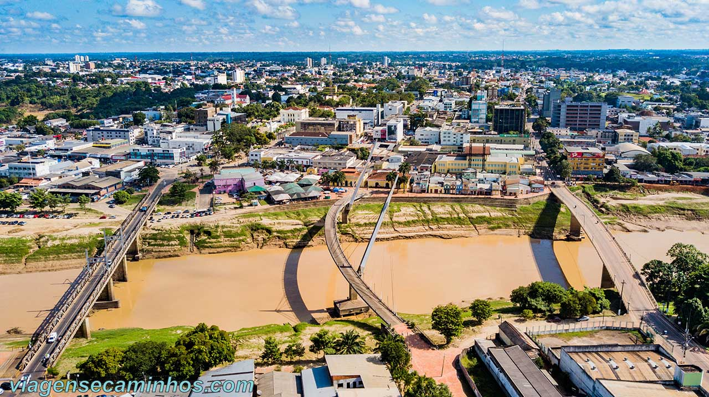
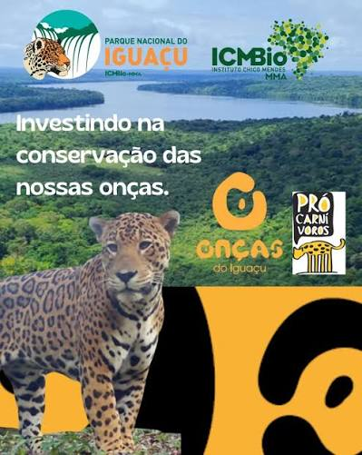
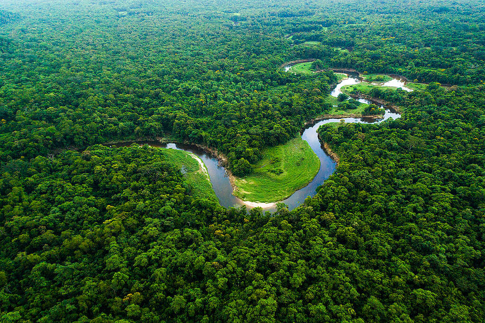
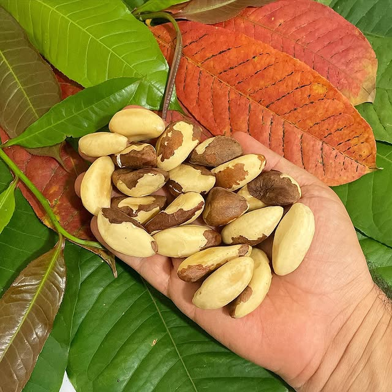
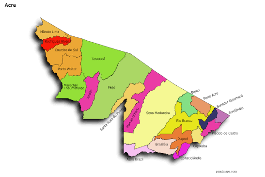

Visão Geral

O Acre situa-se no extremo oeste do território brasileiro, fazendo fronteira com os estados do Amazonas e Rondônia, além de países vizinhos como Peru e Bolívia. Possui área aproximada de 164 mil km² e população superior a 800 mil habitantes.
Dados Gerais
| Informação | Descrição |
|---|---|
| Capital | Rio Branco |
| Região | Norte |
| Área | ≈ 164.123 km² |
| Gentílico | Acreano |
| Bioma predominante | Amazônia |
| Fuso Horário | UTC−5 |
História

Originalmente pertencente à Bolívia, a região do Acre foi ocupada por seringueiros brasileiros durante o ciclo da borracha. Conflitos territoriais culminaram na Revolução Acreana, que levou à assinatura do Tratado de Petrópolis em 1903, incorporando oficialmente o território ao Brasil.
O estado tornou-se uma das referências mundiais em conservação ambiental, principalmente pela atuação do líder seringueiro Chico Mendes.
Geografia

O relevo do Acre apresenta baixas altitudes e extensas planícies cobertas pela Floresta Amazônica. A rede hidrográfica é formada por rios importantes, como o Rio Acre, Rio Juruá, Rio Purus e Rio Envira.
Economia
A economia acreana baseia-se em atividades agropecuárias, extrativismo vegetal, produção de madeira manejada, comércio e serviços. Produtos como castanha-do-pará, látex, açaí e madeira certificada possuem relevância regional.
Cultura

A cultura acreana resulta da influência indígena, nordestina e amazônica. As festas populares, a gastronomia regional e o artesanato refletem essa diversidade cultural.
Mapa do Estado
